Next: Hebbian Learning Up: ch10 Previous: ch10
In machine learning, the artificial neural networks are a category of algorithms that are inspired by the biological neural networks in the brain, and designed to carry out both supervised and unsupervised learning tasks, such as classification and clustering. To understand how such neural network algorithms work, we first consider some basic concepts in biological neural system.
The human brain consists of neurons interconnected through about to 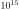 synaptic junctions to form millions of neural networks. Hundreds specialized cortical areas are formed based on these networks for different information processing tasks.
Functionally, a neuron consists of the following three parts:

The function of a neuron can be modeled mathematically. Each neuron,
modeled as a node in the neural network, receives input signal
or stimulus from  neurons and its activation or the
net input is the weighted sum of all such inputs:
neurons and its activation or the
net input is the weighted sum of all such inputs:
| 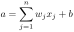 | (1) |
 is the offset or bias,
is the offset or bias,  is the input signal from the jth
node, 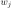 is the synaptic connectivity to the jth input node:
is the input signal from the jth
node, 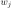 is the synaptic connectivity to the jth input node:
| 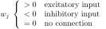 | (2) |
| 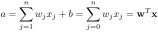 | (3) |
| 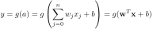 | (4) |

Here  is an activation function, which typically take one of the
following forms:
is an activation function, which typically take one of the
following forms:
| 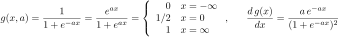 | (5) |
| 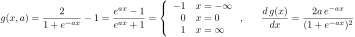 | (6) |
 is a parameter that controls the slop of . Specially,
when
, 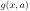 becomes linear, but whn
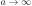, becomes a threshold function:
is a parameter that controls the slop of . Specially,
when
, 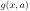 becomes linear, but whn
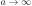, becomes a threshold function:
| 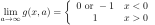 | (7) |
| 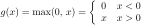 | (8) |

The function of a neural network can be modeled mathematically as a hierarchical structure shown below containing multiple layers of neurons:

The learning paradigms of the neural networks are listed below, depending on the interpretations of the input and output of the neural network.
This is the most general form of neural networks that learns and stores the associative relationship between two sets of patterns represented by vectors.
 pairs of patterns
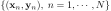 is presented to the network which then learns to
establish the associative relationship between two sets of patterns:
pairs of patterns
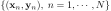 is presented to the network which then learns to
establish the associative relationship between two sets of patterns:
| 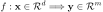 | (9) |
 in a pair is presented as the
input, the network produces an output pattern
in a pair is presented as the
input, the network produces an output pattern  associated to
the output.
associated to
the output.
Human memory is associative in the sense that given one pattern, some associated pattern(s) may be produced. Examples include: (Evolution, Darwin), (Einstein, 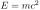), (food, sounding bell, salivation).
As a special pattern associator, auto-associator associates a prestored pattern to an incomplete or noisy version of the pattern.
This is another special kind of pattern associator which takes a vector input 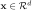 and produces a real value 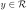 as a multivariable function 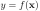 at its only output node.
 , the output value produced
by the single output node is an estimated function value
.
, the output value produced
by the single output node is an estimated function value
.
This is a variation of the pattern associator of which the output patterns are a set of categorical symbols representing different classes 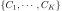, i.e., each input pattern is classified by the network into one of the classes
| 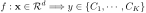 | (10) |
This is an unsupervised learning process. The network discovers automatically the regularity in the inputs so that similar patterns are automatically detected and grouped together in the same cluster or class.